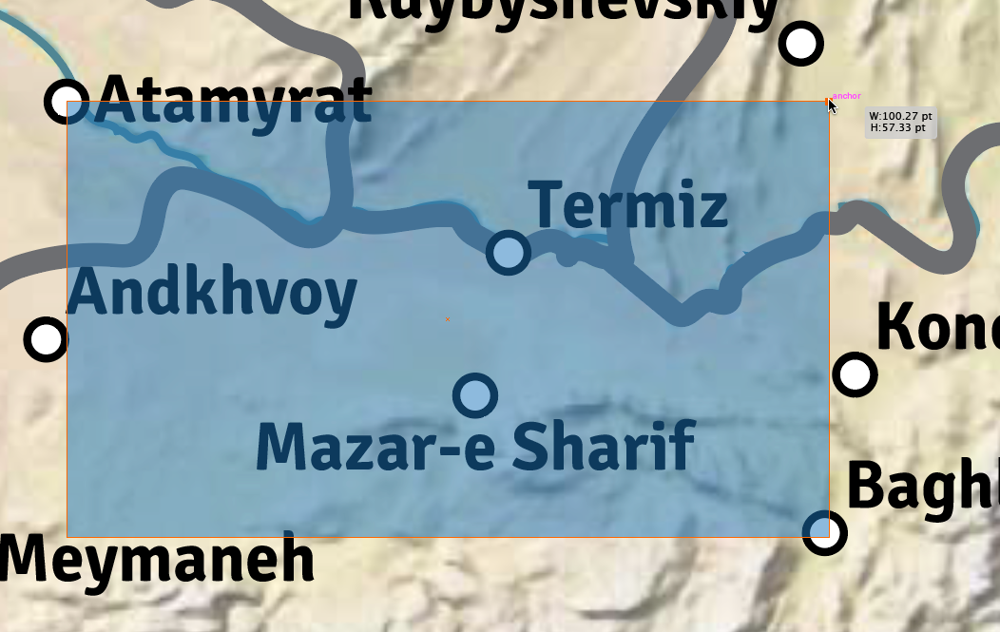

Finds the location of a city on the Central Asia map.
Add gps coords from wikipedia of the town you want to locate, eg. 34°40′11″N 112°26′32″E
Locate two towns and draw a box between them that covers the area you need to locate. ote the dimensions near the corner you are pulling. Add the dimensions here.
W:
H:
Now enter the gps coordinates for the towns you used as anchors.
TL:
BR:

Move the corner until you see:
W: px
H: px